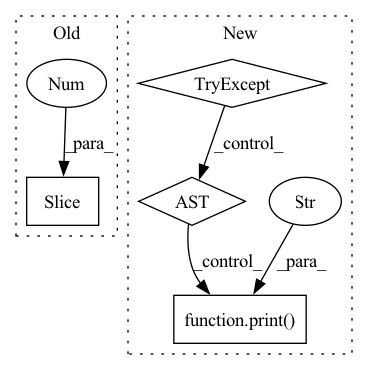

Pattern ID :12283

Before Change
bias = module_list[-1][0].bias.view(len(mask), -1) // 255 to 3x85
if arc == "normal":
bias[:, 4] -= 5.0 // obj
bias[:, 5:] -= 4.0 // cls
elif arc == "uCE": // unified CE (1 background + 80 classes)
bias[:, 4] += 3.0 // obj
bias[:, 5:] -= 4.0 // cls
After Change
yolo_index=yolo_index) // 0, 1 or 2
// Initialize preceding Conv2d() bias (https://arxiv.org/pdf/1708.02002.pdf section 3.3)
try:
if arc == "normal":
b = [-5.0, -4.0] // obj, cls
elif arc == "uCE": // unified CE (1 background + 80 classes)
b = [3.0, -4.0] // obj, cls
elif arc == "uBCE": // unified BCE (80 classes)
b = [-5.0, -4.0] // obj, cls
bias = module_list[-1][0].bias.view(len(mask), -1) // 255 to 3x85
bias[:, 4] += b[0] // obj
bias[:, 5:] += b[1] // cls
module_list[-1][0].bias = torch.nn.Parameter(bias.view(-1))
// utils.print_model_biases(model)
except:
print("WARNING: smart bias initialization failure.")
else:
print("Warning: Unrecognized Layer Type: " + mdef["type"])
In pattern: SUPERPATTERN
Frequency: 3
Non-data size: 4
Instances
Fragment ID: 41642091
Project Name: nightsnack/yolobile
Commit Name: 0040c85b9a9a2ce1333dab59a24c31e67e713723
Time: 2019-08-22
Author: glenn.jocher@ultralytics.com
File Name: models.py
M Class Name: AnonimousClass
N Class Name: AnonimousClass
M Method Name: create_modules(2)
N Method Name: create_modules(2)
M Parent Class:
N Parent Class:
M File Name: models.py
N File Name: models.py
M Start Line: 80
M End Line: 90
N Start Line: 80
N End Line: 96
'>
Before Change
// append only the front of window
T_gt.append(batch["T_21"][-2].numpy().squeeze())
T_pred = get_T_ba(out, a=-2, b=-1)
R_pred.append(T_pred[:3, :3].squeeze())
t_pred.append(T_pred[:3, 3].squeeze())
results = computeMedianError(T_gt, R_pred, t_pred)
After Change
ts = time()
if (batchi + 1) % self.config["print_rate"] == 0:
print("Eval Batch {}: {:.2}s".format(batchi, np.mean(time_used[-self.config["print_rate"]:])))
try:
out = self.model(batch)
except RuntimeError as e:
print(e)
print("WARNING: exception encountered... skipping this batch.")
continue
if batchi in self.vis_batches:
self.vis(batchi, batch, out)
loss, dict_loss = self.model.loss(out["src"], out["tgt"], out["match_weights"], out["keypoint_ints"], out["scores"], batch)
'>
Fragment ID: 41642090
Project Name: utiasasrl/hero_radar_odometry
Commit Name: 8d350142346975f4786cb80a06d94b6d92cdef5d
Time: 2021-02-11
Author: keenburn2004@gmail.com
File Name: utils/monitor.py
M Class Name: SteamMonitor
N Class Name: SteamMonitor
M Method Name: validation(1)
N Method Name: validation(1)
M Parent Class: MonitorBase
N Parent Class: MonitorBase
M File Name: utils/monitor.py
N File Name: utils/monitor.py
M Start Line: 177
M End Line: 233
N Start Line: 184
N End Line: 236
'>
Before Change
import ntpath
def ESRGAN_run(vidPath, Round):
vidName = ntpath.basename(vidPath)[:-4]
os.mkdir(f"./BasicSR/Out/Round{Round}/{vidName}")
framesOutV2F = f"./vid2Frames/Round{Round}/" + vidName
framesOutESR = f"./BasicSR/Out/Round{Round}/" + vidName
After Change
framesOutESR = f"./BasicSR/Out/Round{Round}/{dir}"
os.chdir("BasicSR")
command = f"python inference/inference_esrgan.py --model_path experiments/pretrained_models/ESRGAN/ESRGAN_SRx4_DF2KOST_official-ff704c30.pth --input {framesOutV2F} --output {framesOutESR}"
try:
subprocess.call(command, shell=True)
except subprocess.CalledProcessError:
print("!!!!!!! Error with ESRGAN Paths !!!!!!")
sys.exit()
os.chdir("..")
'>
Fragment ID: 41642094
Project Name: johngettings/lihq
Commit Name: 0b892e51b36594b40de975d2abfa2e814022afdf
Time: 2022-05-14
Author: johngettingsai@gmail.com
File Name: procedures/esrgan_scripts.py
M Class Name: AnonimousClass
N Class Name: AnonimousClass
M Method Name: ESRGAN_run(2)
N Method Name: ESRGAN_run(2)
M Parent Class:
N Parent Class:
M File Name: procedures/esrgan_scripts.py
N File Name: procedures/esrgan_scripts.py
M Start Line: 5
M End Line: 9
N Start Line: 8
N End Line: 17